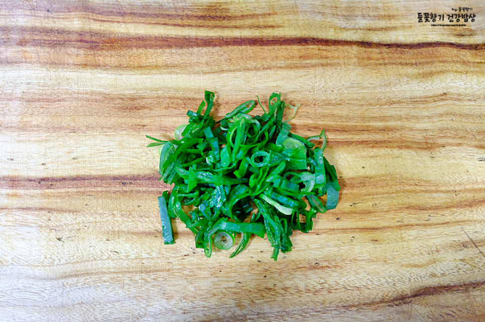
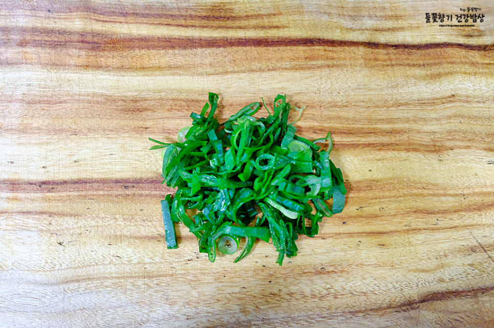

백종원 떡볶이 레시피 황금레시피
- * 재료 * (2~3인분)
- 떡볶이떡 300g,
- 어묵 150g,
- 양배추 100g,
- (+ 세척용 식초 1큰술)
- * 떡볶이 양념장
- 진간장 3큰술,
- 고추장 1큰술,
- 고춧가루 1.5큰술,
- 설탕 2큰술, 물 500ml
- * 계란 삶기
- 계란 3개,
- 굵은소금 0.5큰술,
- 식초 1큰술,
- 물 800ml
- (큰술 : 밥 숟가락 기준)
백종원 떡볶이 레시피 양념장 재료 적어드릴 테니
참고하셔서 만들어 보세요.

가장 먼저 계란을 삶을 거예요.
삶기 전에 실온에 30분 정도 내 놓아서
찬기가 없어졌을 때 삶아야
깨지지 않고 껍질이 매끈하게 까져요.
계란 3개와 잠길 만큼의 물(800ml)을 넣고
굵은소금 0.5큰술, 식초 1큰술을 넣고
센불에 불을 올려주세요.
소금은 껍질을 잘 까지게 해주기 위해서 넣은 거고
식초는 삶다가 계란이 깨져도
옆으로 흘러나오는 걸 방지하기 위한 거예요.
식초 1큰술 맞춰서 넣었는데
숟가락이 옆쪽으로 흘러내려서
부족해 보이는 거예요.
계란을 삶을 때 한쪽 방향으로 굴려주면서
삶아주면 노른자가 가운데에 쏙 들어가요.
끓어오르기 전까지 굴려주면 되는데요.
서로 부딪치면 깨질 수 있으니
깨지지 않도록 주의해 주세요.

팔팔 끓어오르면
중강불로 줄여서 10분간 삶았어요.
삶은 후에는 열기가 없어지도록
찬물에 여러 차례 헹궈주고 껍질을 까 주세요.
떡볶이떡은 담가놓지 않아도 되는데
물에 담가두면 익는 시간을 단축시킬 수 있어요.
저는 찬물에 담갔다가
다른 재료 준비가 다 끝난 후에 건져서 사용했어요.
양배추는 1.2~1.5cm 두께로 썰고
하나씩 분리해 주고요.

양배추가 잠길 만큼의 물과 식초 1큰술을 넣어주세요.
식초를 넣고 잠시 담가두면
농약이나 이물질을 조금 더 깨끗하게 제거할 수 있어
조금 더 건강하게 드실 수 있어요.
저는 식초를 넣고 5분 정도 동안 담가두었습니다.
시간이 경과 후에 물에 한번 헹궈주고
채반에 담아 놓았어요.
 
어묵은 3장 150g 준비했는데요.
본인이 드시기 좋도록 썰어주면 되세요.
얇은 게 간이 더 잘 배이니 얇은 걸로 준비해 주세요^^
저는 가로로 길게 2등분 해주고,
그다음엔 세로로 1.2cm 정도 두께로 썰었어요.
대파는 많이 들어가면 더 맛있다고 하셨는데요.
저는 1/3대만 준비해서 종종 썰었어요.
물을 500ml 넣고
진간장 3큰술, 설탕 2큰술

고춧가루 1.5큰술, 고추장 1큰술을 투하~~
양념 재료가 잘 풀어질 수 있도록
저어주었고요.
양배추와 대파를 넣고 뒤적여준 후
센불에 불을 올려주세요.
보글보글 끓어오르면
떡, 삶은 계란을 넣고 뒤적여주고요.
다시 끓어오르면
어묵을 넣고 잘 섞어주세요.
끓어오르면 센불로 1~2분 정도 끓여주다가
중불 정도로 줄여서
10~12분 정도면 떡이 부드럽게 익고
양념이 잘 배인답니다.
떡볶이 황금레시피는 한 번에 후루룩 끓이는 게 아니라
일정한 시간 동안 끓여주면서
양념이 잘 배일 수 있도록 해주셔야 해요.
쌀떡보다는 밀떡이 빨리 익고
양념 흡수도 잘 되고 시간도 덜 걸려요.
보글보글 끓어오르면서 국물이
점점 줄어드는 게 보이시죠?
끓이는 동안 숟가락으로 뒤적여주셔야
떡이 바닥에 눌어붙지 않아요.
마무리를 할 시점이 되면 국물도 떠서 드셔보시고,
떡에 양념이 잘 배었는지 드셔보세요.
양념이 잘 배었으면 마무리를 해주면 되는데요.
맛을 보고 기호에 맞춰 조절해 주셔요.
혹시라도 물이 부족하면
보충하면서 끓여주면 되고,
간만 잘 맞춰주면 되세요.

삶은 계란 중에 하나는 에그커터로
잘라서 올려주면 보기에도 더 좋아요.